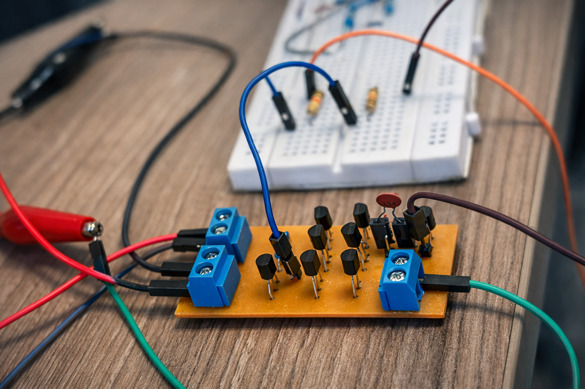

Diseño, simulación e implementación desde cero

Aprende qué es un OP-AMP y sus bloques principales
Cálculos y diseño de cada etapa del circuito
Montaje prototipo para validación rápida
Implementación profesional en circuito impreso
Mediciones finales y validación de especificaciones
Conoce al equipo detrás del proyecto
En este proyecto desarrollamos un amplificador operacional completo desde cero. Pasamos por todas las etapas: diseño teórico, simulación en LTspice, implementación en protoboard y montaje final en PCB.